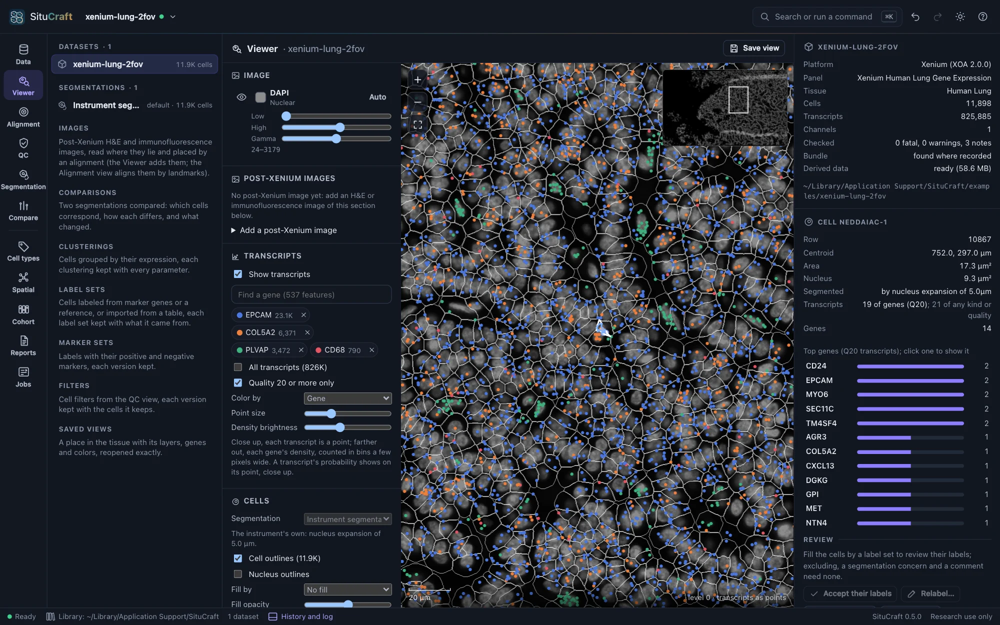
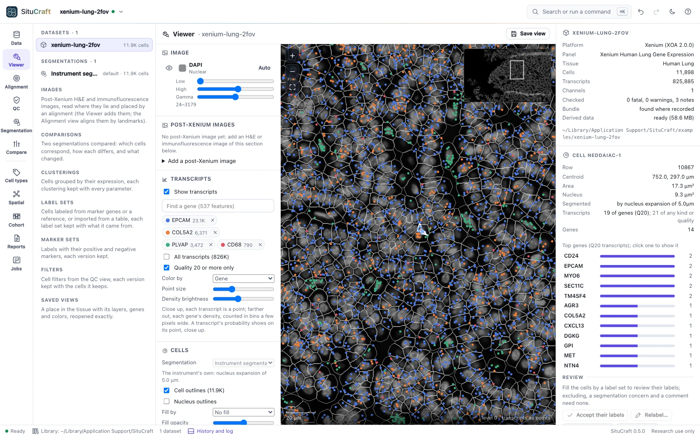
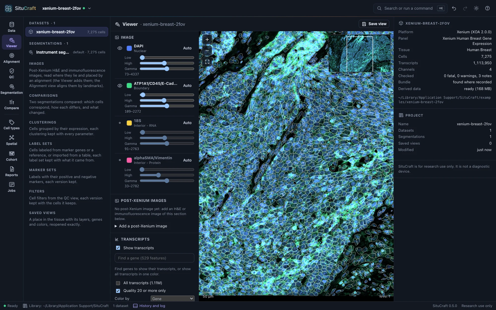
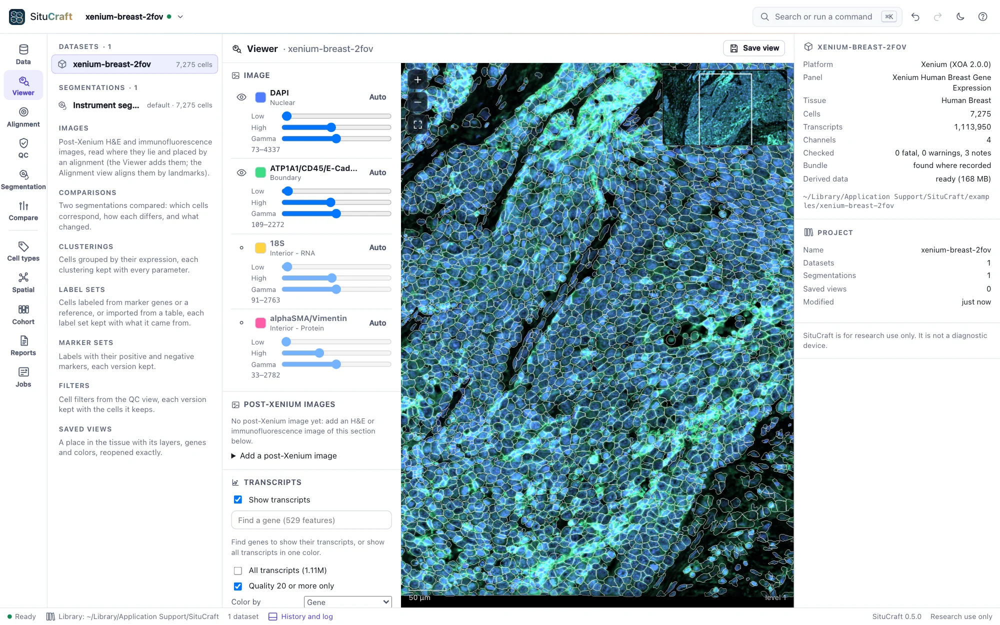
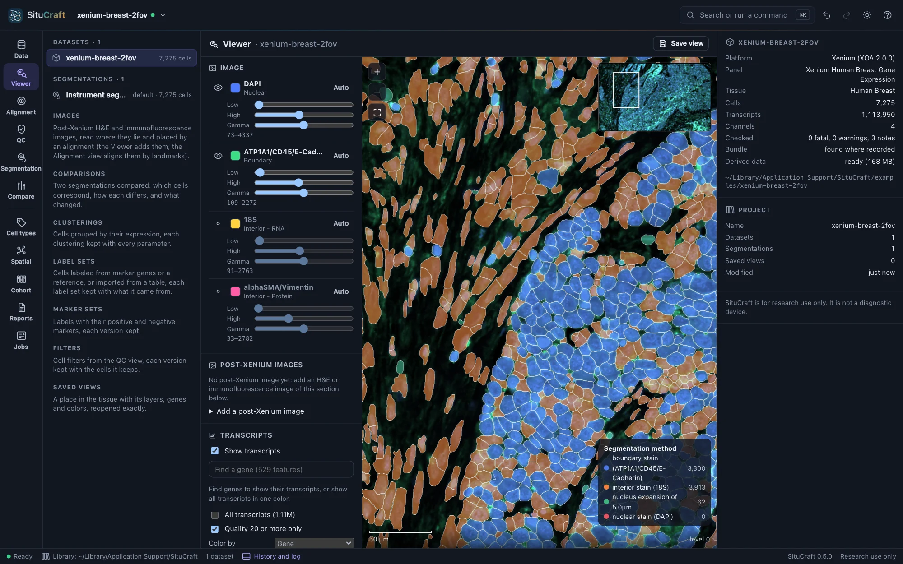
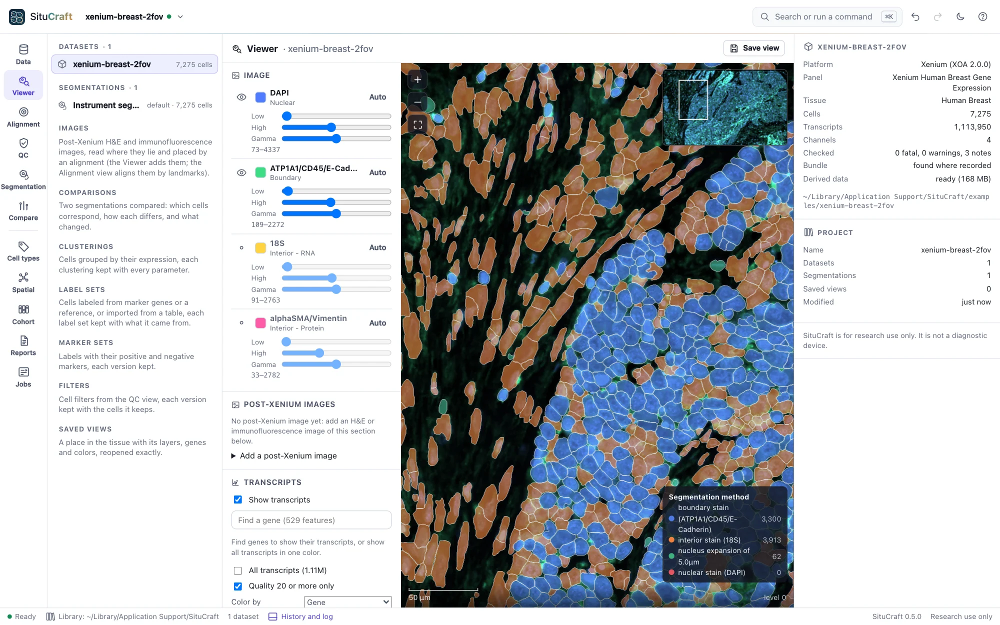
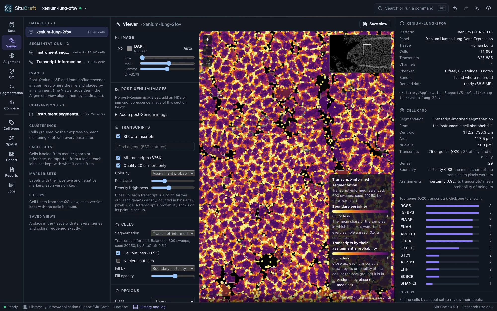
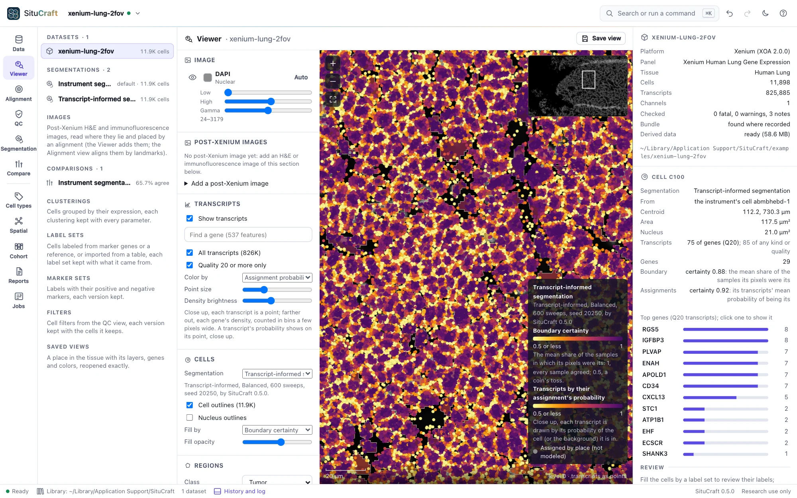

The Viewer
The Viewer shows the tissue at any zoom: the morphology stains as recorded, the transcripts of the genes you choose, and the cells of any segmentation, linked to the inspector and to every other view.
Moving and the layers


- Move: drag to pan; scroll, pinch, + and −, or double-click to zoom; 0 shows the whole tissue; the minimap (top right) jumps to a place. The scale bar and position are in µm.
- Image: each morphology stain with its color, brightness window (Low, High, or Auto) and gamma; the eye shows or hides it.
- Transcripts: type a gene's name to show its transcripts (up to 16 genes, each in its color), or show all transcripts. Up close each transcript is a dot; farther out, each gene's density. Quality 20 or more only keeps the transcripts Xenium counts.
- Cells: cell and nucleus outlines (drawn once cells are large enough to see), and cells filled by their transcripts, area or segmentation method, with a legend.
- Segmentation: any of the dataset's segmentations, chosen in the Cells layer (its default first); the legend says how it was made. A transcript-informed one also fills its cells by the limitations it flagged, its boundary certainty or its assignment certainty, and colors its transcripts, close up, by their probability of their cell: doubtful ones bright, certain ones dark. Show on the tissue, beside a segmentation in the Segmentation view or the inspector, opens it here.
- A cell: click it to see its ID, position, areas, segmentation method and genes in the inspector (right); Esc clears it. In another segmentation than the instrument's, the inspector also says which instrument's cell it came from and how sure the segmentation is of it.






Saved views
Save view keeps exactly what the Viewer shows: the place and zoom, the stains and their settings, the genes, the layers, the segmentation and the selected cell. Saved views are listed in the project tree (left) and the command palette (⌘K or Ctrl+K). Select one to reopen it; in the inspector, Copy link gives a link that reopens it, Rename and Remove change it.